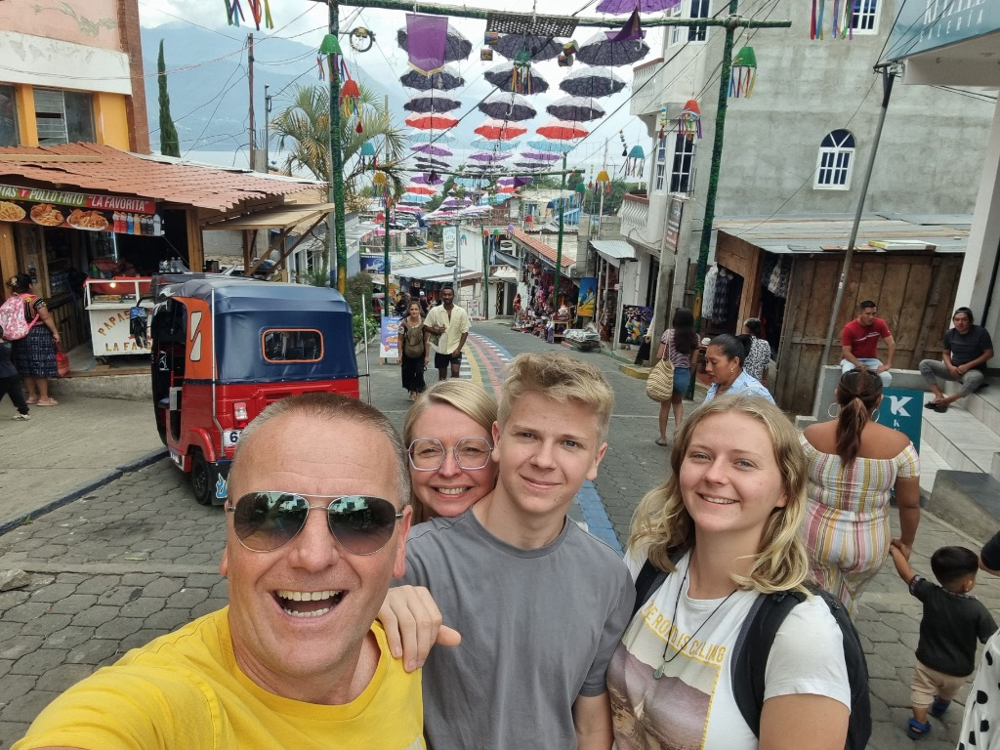

📍 Walldorf ↔ Dénia
Unsere Geschichte
Warum „Casa Englers y Amigos“?
Als wir Dénia das erste Mal erlebt haben, war es sofort um uns geschehen: der endlose Sandstrand direkt vor der Tür, der markante Montgó im Rücken und laue Abende mit Tapas in der autofreien Calle Loreto.
Aus dieser Urlaubsliebe wurde unser kleines, feines Hauptquartier im 3. Stock der Urbanisation Albatros. Und weil geteilte Sonne doppelt so schön ist, lassen wir die Wohnung nicht leer stehen, sondern öffnen die Tür gerne für Freunde, Bekannte und Familie.
Unser Motto: Fühlt euch wie zu Hause – nur eben mit mehr Sonne, Meeresrauschen und deutlich weniger Pflichten!